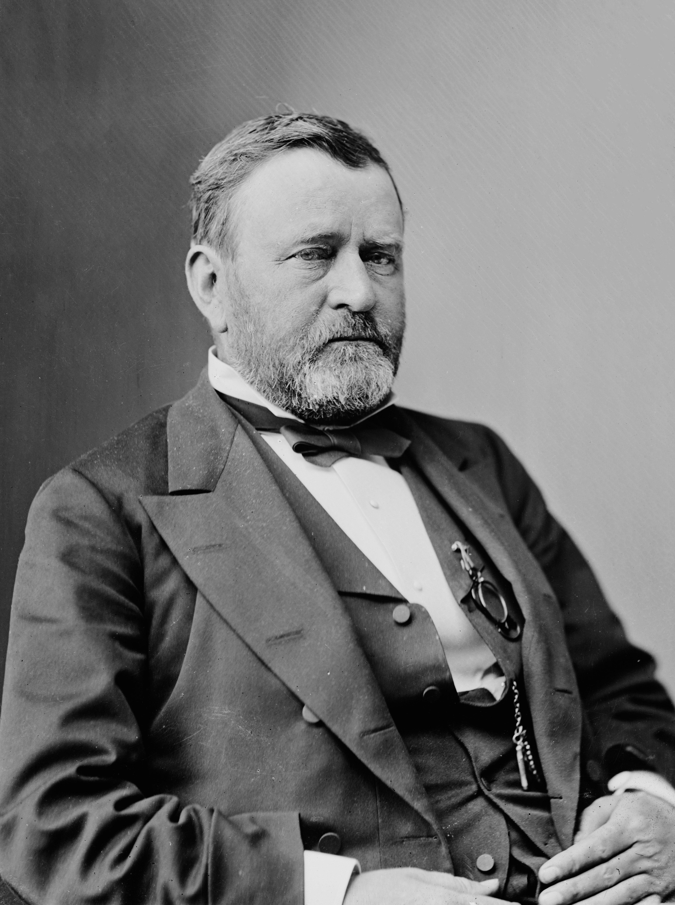

Directions: Read the two records and the background note, then answer the questions.
Background. In 1871 and 1872 a joint committee of Congress investigated the Ku Klux Klan, taking testimony across the South. The first record is from the testimony of Abram Colby, a Georgia legislator. The second is from the Enforcement Act of April 1871, the statute Congress built on testimony of this kind.
"On the 29th of October 1869, [the Klansmen] broke my door open, took me out of bed, took me to the woods and whipped me three hours or more and left me for dead. They said to me, "Do you think you will ever vote another damned Radical ticket?" I said, "If there was an election tomorrow, I would vote the Radical ticket." [...] About two days before they whipped me they offered me $5,000 to go with them and said they would pay me $2,500 in cash if I would let another man go to the legislature in my place. I told them that I would not do it if they would give me all the county was worth."
Source: Abram Colby, testimony of 1872, as carried in the audited TPSP bank record (Report of the Joint Select Committee on the Late Insurrectionary States, 1872, as the record's sourceNote names). Cuts are marked with ellipses.
"[...] shall conspire together, or go in disguise upon the public highway or upon the premises of another for the purpose, either directly or indirectly, of depriving any person or any class of persons of the equal protection of the laws, or of equal privileges or immunities under the laws [...]"
Source: Enforcement Act of 1871, Section 2, as carried in the audited TPSP bank record (Wikisource transcription of the enrolled act, as the record's sourceNote names). Cuts are marked with ellipses, as the record carries them.

1. State what was done to Colby and why, naming the date, the length of the whipping, the question the men put to him, and the answer he gave.
2. State the bargain Colby refused, naming both sums, what each was meant to buy, and the words of his refusal.
3. Rebuild the statute's reach: the two ways of offending it names in this passage, the two protections it names, and the practice from life its disguise clause describes.
4. A student writes that the Klan was a band of outlaws and the Enforcement Acts ordinary criminal law. Test the claim against these two records. Name two facts, one from each record, that the claim leaves out, and state what each one shows.
1. What was done, and why. On October 29, 1869, Klansmen broke Colby's door open, took him from his bed to the woods, and whipped him for three hours or more and left him for dead. They asked whether he would ever vote another Radical ticket. He answered that if there was an election tomorrow, he would vote the Radical ticket. The whipping's stated occasion was his politics: his vote and his organizing. (Blueprint 11)
2. The bargain refused. About two days before the attack the men offered Colby $5,000 to go with them, and $2,500 in cash if he would let another man go to the legislature in his place. He told them he would not do it if they would give him all the county was worth. Both sums belong in a full answer: the terror tried purchase before it tried the lash, and Colby refused both instruments. (Blueprint 11)
3. The statute's reach. The passage names two ways of offending: conspiring together, and going in disguise upon the public highway or upon the premises of another. The protections named are the equal protection of the laws and equal privileges or immunities under the laws. The disguise clause describes night riding, the Klan's practice of visiting houses after dark in costume. Congress wrote the costume into the statute because disguise was the practice's protection against identification and prosecution. (Blueprint 12)
4. Test the claim of outlaws and ordinary law. Any two facts, accurately used, one of each kind. From the testimony: the attack was preceded by a $5,000 offer to buy a legislator's allegiance and a $2,500 offer to buy his seat, and its stated ground was his ticket, which shows a political instrument aimed at an electorate and a legislature, not private outlawry; in the full testimony Colby also names a lawyer, a doctor, and farmers among his attackers. From the statute: Congress had to write a federal law reaching disguise itself, conspiracy, and conduct under color of state law, and to move cases into federal court, which shows the ordinary state process was not reaching the crime. A secret political army and a federal statute built against it are the claim's missing half. (Blueprint 11, Blueprint 12)
Teacher note. This check is formative. Question 2 is the one to read closely: a student who holds both sums and the refusal holds the lesson's account of how terror worked, by purchase first and by violence when purchase failed. Question 4 separates students who can test a label against two records from students who repeat the label.